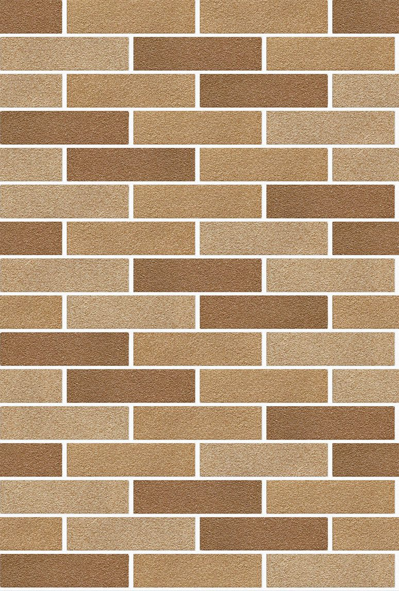
AMK Mix 100
Textură premium cu aspect natural de piatră și finisaj elegant.
Panourile AMK oferă aspect premium, montaj rapid și durabilitate maximă. Soluția ideală pentru fațade moderne.
Modele Mix cu texturi variate pentru un aspect natural de piatră.

Textură premium cu aspect natural de piatră și finisaj elegant.
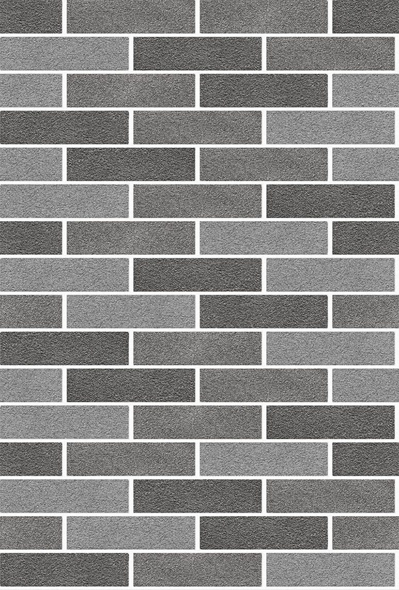
Aspect luxos pentru proiecte și vile moderne.
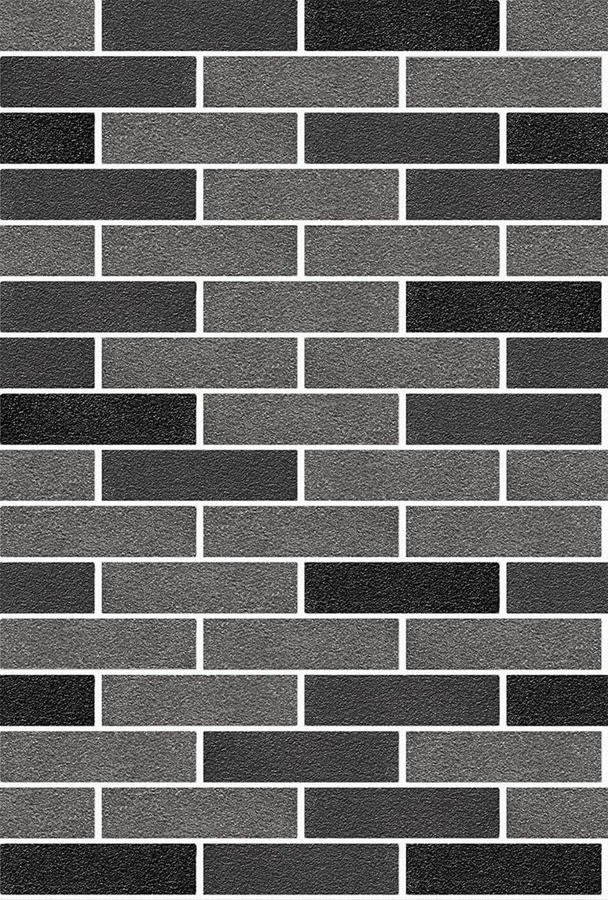
Design modern, execuție profesională și durabilitate maximă.
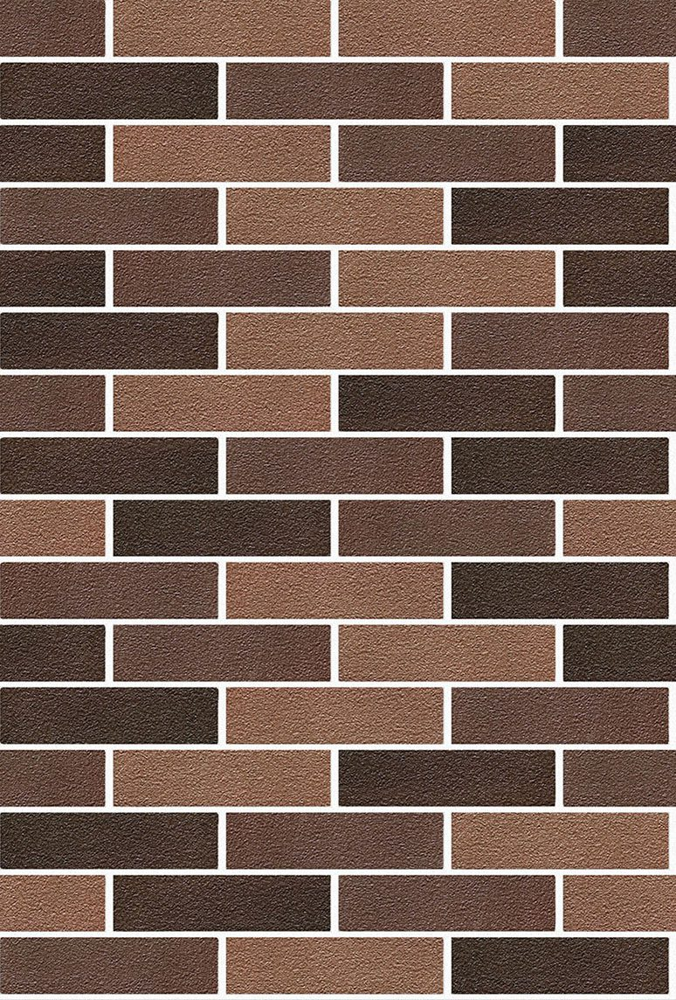
Marmură naturală cu textură autentică și rezistență superioară.
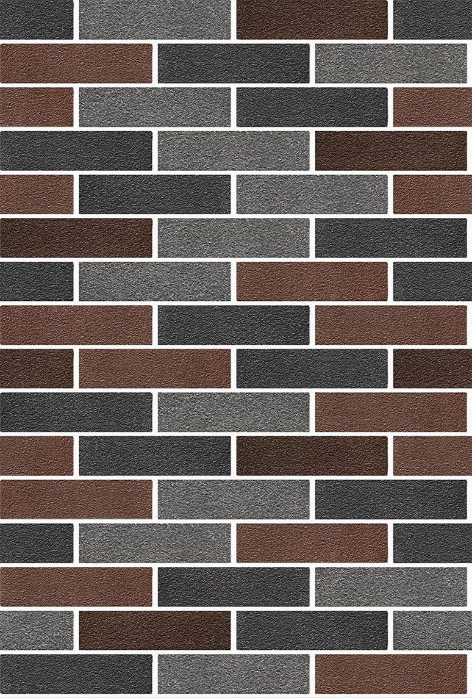
Marmură naturală în nuanțe calde pentru un aspect primitor.
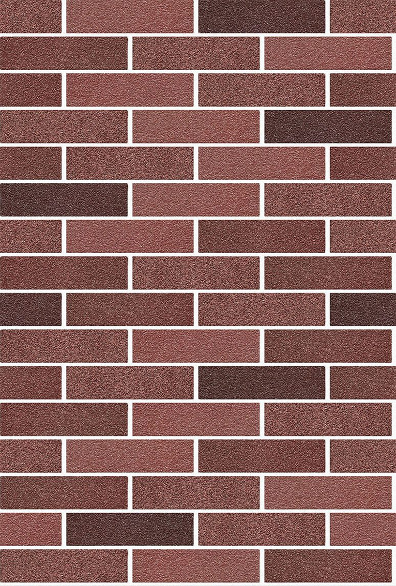
Marmură naturală în tonuri reci pentru un design contemporan.
Modele Mono cu nuanțe uniforme pentru un look clasic și elegant.
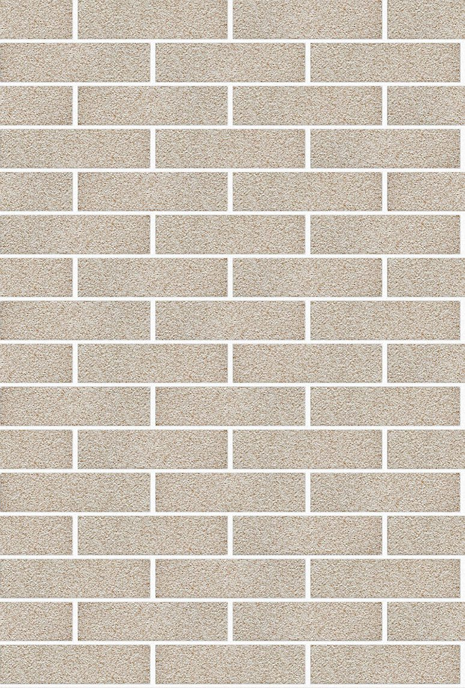
Marmură naturală în nuanță uniformă, clasică și elegantă.
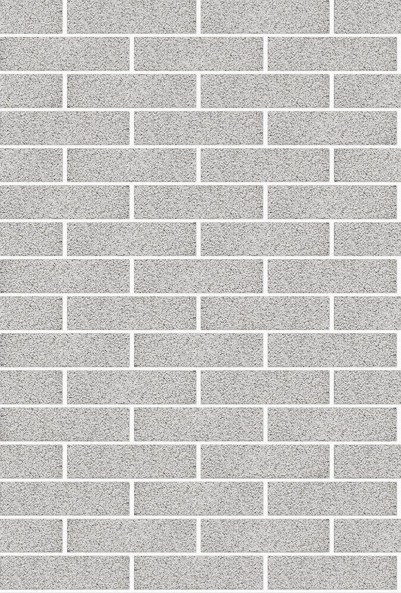
Marmură naturală cu finisaj mat și aspect sofisticat.
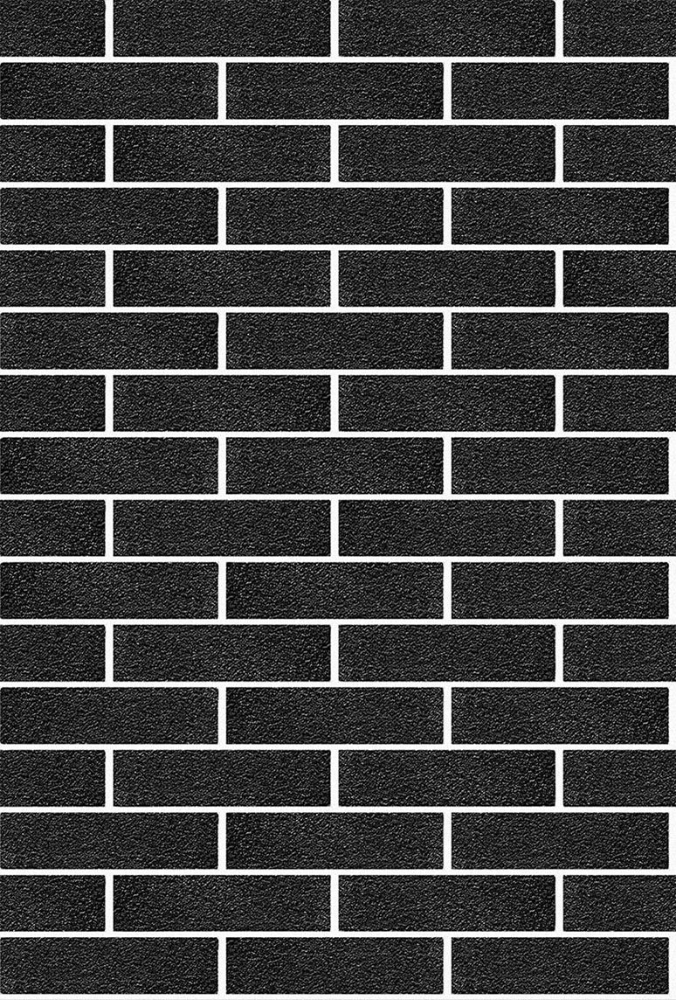
Marmură naturală în tonuri deschise pentru luminozitate maximă.
Exemple de proiecte realizate de echipa Valmex cu panouri AMK.

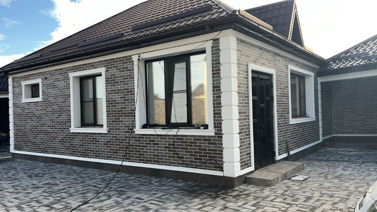
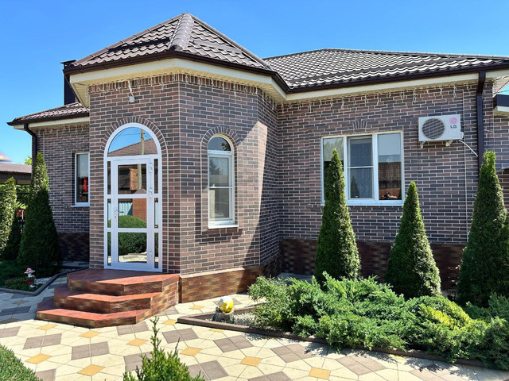
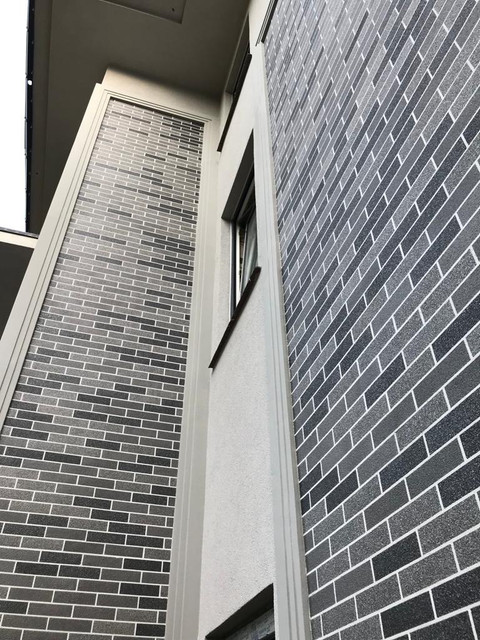
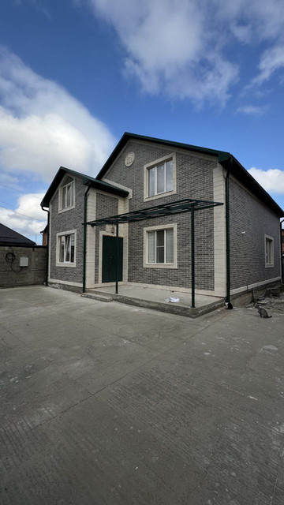
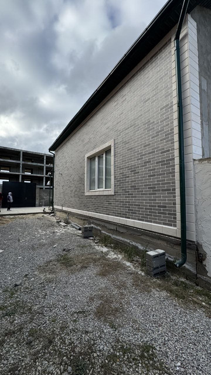
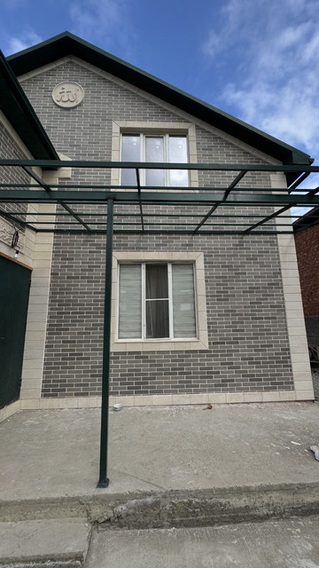

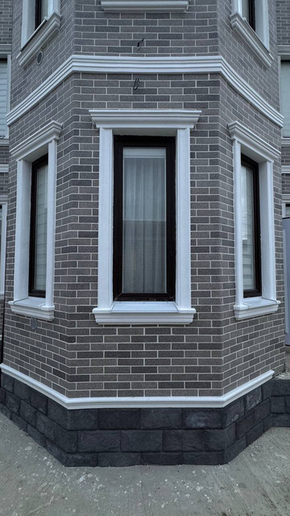

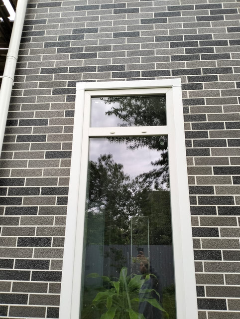
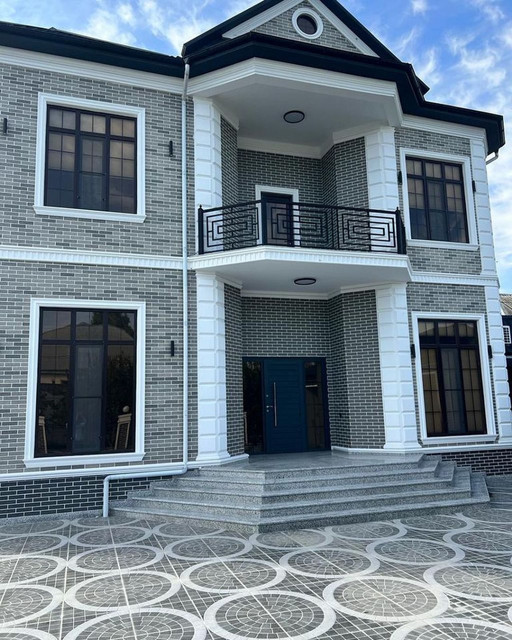
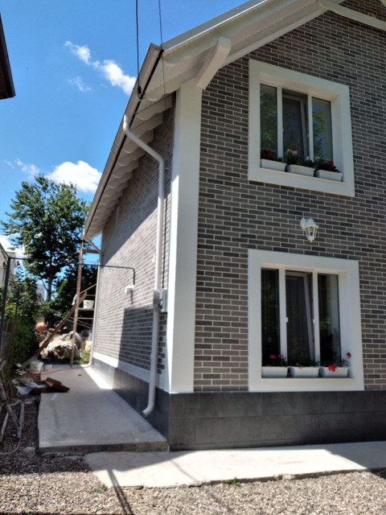

Află totul despre panourile AMK – modele, culori și procesul de montaj.
Montaj rapid și profesional al panourilor AMK.
Evaluăm suprafața și îți recomandăm modelul AMK potrivit.
Primești ofertă cu număr exact de panouri, adeziv și accesorii.
Curățare, nivelare și aplicare grund pentru aderență maximă.
Aplicare adeziv și fixare panouri AMK cu dibluri mecanice.
Chituirea rosturilor pentru un aspect unitar și impermeabil.
Control calitate, curățenie și predare cu garanție scrisă.
Răspunsuri la cele mai comune întrebări despre panourile AMK.
AMK este un panou decorativ din marmură naturală și rășini, cu aspect de piatră naturală, rezistent la intemperii și UV.
Montajul este rapid — o fațadă medie se finalizează în 3-7 zile lucrătoare, în funcție de suprafață.
Da, dacă tencuiala este solidă și stabilă. Facem evaluare gratuită înainte de montaj.
Completează formularul și te contactăm în cel mai scurt timp.